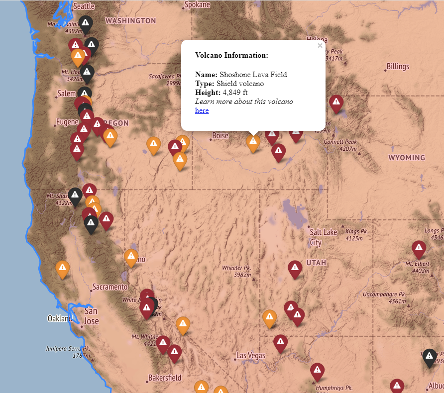
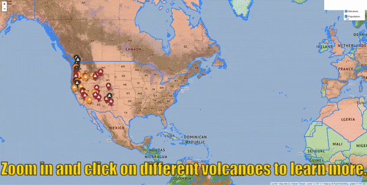
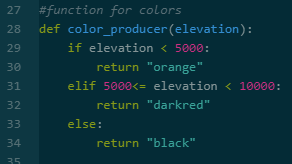

As someone who loves to learn and read about all sorts of topics, I have intentionally placed myself in the “beginner’s spot” many times over the years. In any project I lead or any situation I find myself in at work, I firmly believe that there is always more to the story than what is on the surface. This allows me to connect seemingly separate ideas to create new ones.
While a general approach like that can be great, it can also create quite a challenge where more depth is required to understand a specific topic.
On and off since about early 2020, I’ve been dabbling with learning Python coding. I hear over and over how it is an in demand skill and is easy to learn. Sounds simple enough, right? And yet, I find it so hard to stay engaged in just about any Python course I have started. I know of at least three I’ve tried to date, and only one has completely changed the game for me. It is not to say that any methods are bad. In fact I enjoyed certain aspects of each one I’ve tried, and I have multiple recommendations below. I find that it all comes down to the delivery style and what your goals are.
Here are three main styles of learning I have tried and what I like about each:
1. Self-paced Reading Exercises with a Browser Editor
While the in-browser Python editor type courses have been a great way to practice without a ton of Python setup, this method is a challenge because it is really hard for me to visualize the practice scenarios as real world scenarios. I know the overall end result is going to get to a real world scenario, but it is a bit of a challenge to visualize it along the way because my goal isn’t to completely switch careers. I could certainly see this being a viable option for someone looking for a very comprehensive course for a career change. If this sounds like the route for you, here’s one course approach to look into.
2. Video Courses – Exercises, Quizzes, & Presentations
This approach is nice for me because it involves someone presenting the information and explaining things. I learned how to set up a Jupyter Notebook to save little code snippets and notes based on the presentation of the course information. However, there are still challenges.
The first challenge is that I think some quiz questions have the potential to be more difficult than the context of the lesson. I know it’s not intentional, and it’s not hard to understand why this happens. If an instructor knows a topic extremely well, it can be easy to skim the basics that someone is actually looking for when learning.
Another challenge is that sometimes some of the presented answers that work for the instructor are things that give me errors when I type in the same things. Without contextual explanations, it can be tough to figure out why I am experiencing errors while the instructor does not.
Lastly, it’s harder for me to stay engaged in something that is only presented, not demonstrated. I could see this being a viable option for someone who has practiced the basics already and needs more of a quick refresher.
If this sounds like the route for you, here’s one course approach to look into.
3. Video Courses – Hands on Demo, Exercises, Quizzes, & Real World Project Courses
This approach has changed the game for me, hands down. I only came across it by chance. Not only is it a video course, it involves actual demonstrations of Python setup, code editor set up, and more. I quickly learned to how to organize folders and files, as well as set up a Jupyter notebook and Google Colab notebook. I now have a growing library of snippets in both .py and .ipynb, supported by a folder structure and naming conventions.
The instructor intentionally lets errors occur while demonstrating code development for the purpose of explaining how to troubleshoot. I also appreciate the explanations with the nuances of different versions of Python. In the very first video, actual real world projects and apps were presented with recommendations on which ones to try. This is especially helpful in visualizing the potential outcomes I am looking for in learning Python. I could already see parallel possibilities with immediate uses from making it through the course and building the suggested apps.
In addition to the videos, there were coding exercises with hints that made sense for the context of the lesson, a preliminary quiz, and quizzes throughout. I did a lot better than I thought I would on the preliminary quiz, considering that I’ve taken the beginning lessons of many courses.
What really stands out to me are the edits and updates to the videos themselves to state new information that wasn’t originally recorded. One of my biggest frustrations previously was seeing something typed on a screen in a tutorial that just did not yield the same result for me. The presented idea of things changing over time shows due diligence in keeping a course updated. It also recognizes the importance of figuring out solutions on your own.
In a business context, it’s important to develop solutions and/or a “Plan B”. If you develop things that only depend on things that might not be updated over time, you could run into issues. In a related topic, I experienced this same challenge in learning how to use Dynamo as well. Thankfully, there is a page that is dedicated to popular and dependable Dynamo packages. Also, I’m happy to say the book that I was a technical reviewer for incorporates many “pro tips” on the nuances of things that may change or affect results in connecting Power BI, Revit, & Dynamo.
If you’ve tried learning Python and experienced the same challenges as me with other learning methods, maybe this approach is for you. Find it on Udemy.
Tips and Tricks to Learning Python
Now that you know about the different approaches and what I liked about them, here are tips and tricks I have for learning Python.
1. Set up an Organization System to Support Your Learning
Setting up an organized Jupyter Notebook with code examples and notes has been really great for my learning.
Overall, I organize everything in folders based on concept and topic, not by course. This allows me to consolidate learning from multiple sources and not lose things. It proves to be greatly helpful in searching for examples.
I name all my files a certain way, so I know basically what the contents are before opening them. For instance, code snippets that involve importing or loading things are in an entire folder by themselves.
I also try to keep the content of these files concise, so they are covering a very specific example. I keep user input code snippets in personalized outputs separate from input code snippets that may report certain conditional results based upon those inputs.
Within the files themselves, I add comments in key parts. That way, I know even more context on what the Python code is considering in the results.
2. Create a Nagging Question Each Step of the Way
Simply completing what the coding exercise asks is indeed quick. I think it is even more satisfying to come up with a nagging question outside of what the instructor demonstrated. The nagging questions ask things like “How can I?” and “What if?”
For instance, I have built one “app” so far in the course I’m taking right now. This one had to do with producing an interactive map that plotted locations of volcanoes and other data about them.
Here’s what it looks like at the time of writing:  
Technically, I finished that project, but I took it several steps further for my own learning with the following questions:
What other colors can I use? Based on what I know about the use of color for data visualization, I looked for different colors to use in my Python project as an option.
What if I need this in other units? I realized that my data set for this project had metric values instead of imperial to plot on a map of the US. I then looked into how to iterate through a list to convert from each metric value to an imperial one.
What if I need to round a number? I realized that once I converted metric meters to imperial feet that all the extra decimal places introduced spurious accuracy. I figured out a way to round the numbers to a whole number instead.
How can I format with commas? I then realized that I was dealing with data that included elevations of over a thousand feet in height. I looked into introducing comma separators to show those numbers better.
How can I change the appearance of HTML and hyperlinks? I realized that the HTML example hyperlinked on the name of the volcano. I wanted it to link to something within a message such as “Read more here” instead.
How can I adjust the HTML and hyperlinks? I also realized that the HTML example hyperlinked to a search term with a singular variable. I thought two variables would make for a better result, so I learned how to do that. Example: Searching “Yellowstone” vs “Yellowstone Caldera” will get different results.
How do I change the appearance to customize this? For my map, I chose not to go with circle markers demonstrated but regular markers that had icons in them. I learned how to make a different icon show up as well as some caveats with things like fontawesome. A triangle with an exclamation point is far more fitting in locating volcanoes on a map, in my opinion.
How do I change the size? After I adjusted some formatting with the HTML, I realized that the popup box was too small. It created a scroll bar to display the information. I then looked into resizing the popup altogether.
3. Make the Environment Inviting and Remove Barriers
Everyone talks about practicing regularly, and I certainly agree. The underlying hack I have for this is to address barriers to make the environment more conducive to learning. That means that you remove as much resistance as you can for practicing or doing something. Having a browser or Python editor of your choice ready to go is a subtle yet easy way to keep learning. Having a computer turned off or having a messy desk blocking the way to your keyboard are obstacles. Those subtle obstacles make it tempting to say, “not today.” Fight it.
A recent thing I realized was how I could customize the “themes” in the editor of my choice. The two code editors I was introduced to so far were Visual Studio Code and Atom. For years, I knew of a general “dark” or “light” theme with applications. With these code editors, there are even more options than I realized. I can make everything a tranquil dark blue with shades of green, gray, and pink for the text. It’s far more enjoyable to look at in addition to it being helpful for writing code in the first place. Everyone’s preferences are different. Find one that works for you.

Removing barriers plays out in other ways too. I mentioned that I love to read. Well, I have a much easier time reading tons of books only if they are specifically on my Kindle Paperwhite. In comparison, the physical books on my shelf are often partially finished and forgotten about. In contrast, I can finish an entire Kindle book in one sitting.
Why is that?
Well, the Kindle has a subtle back lit screen, so there is no barrier for not being able to read in the dark. There are progress features not only in the time it takes to read the rest of the chapter but also the percentage left to finish the book. With features like that, there is no barrier in thinking I wouldn’t have time to squeeze in some reading. And finally, it’s ridiculously easy to track notes on my GoodReads account that is tied to my Kindle. To be able to make a remotely similar experience happen with physical books, I have to tab out each chapter with post it flags and make it a point to read during the day with great lighting.
So there you have it. What are your tips for learning Python or other subjects?